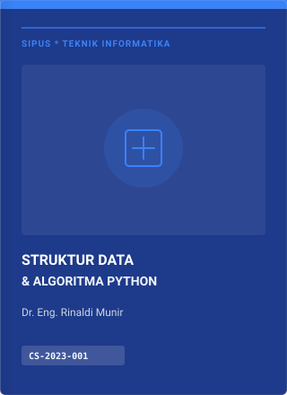
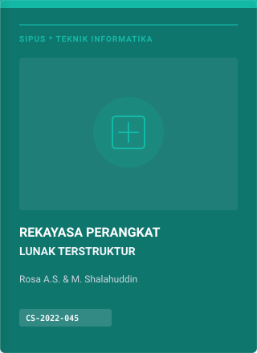
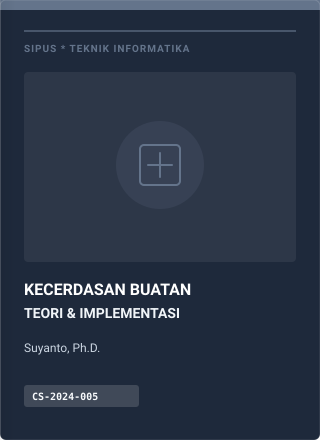
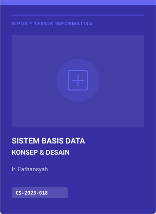
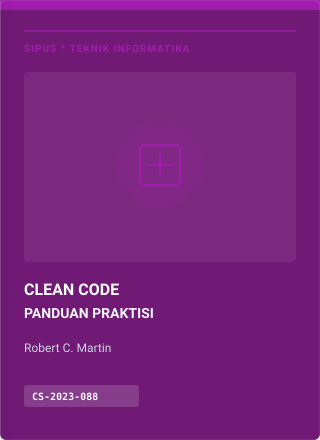
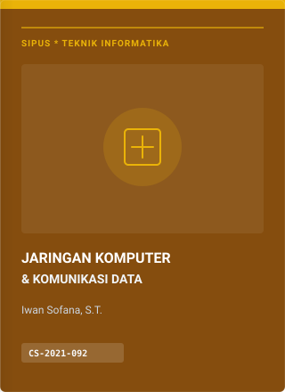

Selamat Datang di Panel Operasional SIPUS
Pantau sirkulasi koleksi pustaka, status anggota, dan aktivitas peminjaman harian.
Tahun Akademik 2026/2027 • Semester Ganjil
Total Koleksi Buku
1,480
8 judul buku utama terindeks
Jumlah Anggota Aktif
3,240
+28 pendaftar minggu ini
Peminjaman Aktif
428
12 transaksi jatuh tempo hari ini
Pengembalian Selesai
1,192
Tingkat pengembalian tepat 96%
Distribusi Sirkulasi Koleksi Berdasarkan Kategori
Persentase peminjaman buku sepanjang bulan berjalan (Visualisasi Statis CSS)
Transaksi Peminjaman & Sirkulasi Terkini
5 transaksi sirkulasi paling baru di meja layanan
| No. Transaksi | Nama Anggota | Judul Buku | Tgl Pinjam | Jatuh Tempo | Status | Aksi |
|---|---|---|---|---|---|---|
| TRX-2026-001 | Arya Indra Saputra (202443501340) |

CS-2023-001
|
01 Nov 2026 | 08 Nov 2026 | Dipinjam | Proses Kembali |
| TRX-2026-002 | Shendy Faiz Saputra (202443501352) |

CS-2022-002
|
28 Okt 2026 | 04 Nov 2026 | Hari Ini Tempo | Proses Kembali |
| TRX-2026-003 | Muhammad Ilham (202443501354) |

CS-2024-005
|
24 Okt 2026 | 07 Nov 2026 | Dipinjam | Proses Kembali |
| TRX-2026-004 | Muhammad Nazril Padillah (202443501357) |

CS-2021-003
|
20 Okt 2026 | 27 Okt 2026 | Terlambat (8 Hari) | Terima Denda |
| TRX-2026-005 | Abdul Havis (202443501412) |

CS-2019-007
|
15 Okt 2026 | 22 Okt 2026 | Selesai Kembali | Arsip |
| TRX-2026-006 | Sulton Syarief (202443502249) |

CS-2023-004
|
02 Nov 2026 | 09 Nov 2026 | Dipinjam | Proses Kembali |